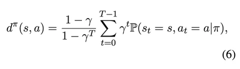
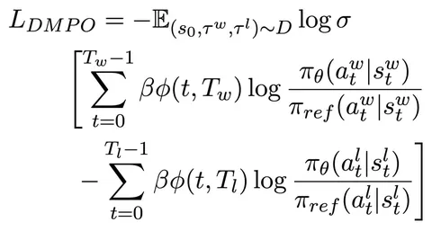
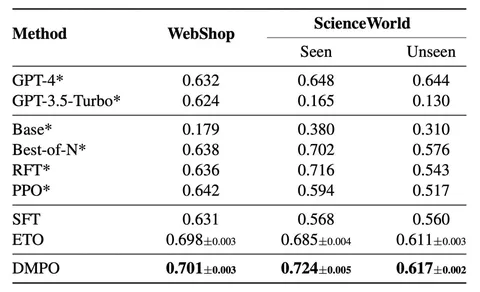

Сегодняшняя статья — о Direct Multi-Turn Preference Optimization. Это модификация DPO, которая позволяет получить лучшие результаты. Но не всё так просто.
Традиционный DPO заточен на работу с парами «префикс и суффикс» — то есть запрос пользователя и ответ. Авторы статьи задались целью распространить его на длинные цепочки. Однако в публикации работают не диалогами, а с окружением из трёх датасетов: ALFWorld, WebShop и ScienceWorld.
Скажем, в ScienceWorld агенту даётся задание — например, выяснить, обладает ли металлическая вилка электропроводностью — и текстовое представление нескольких «комнат» с разными объектами. С ними можно выполнять некоторые действия, чтобы достигнуть поставленной цели. В ScienceWorld задачи чуть сложнее, чем, например, в ALFWorld, где может потребоваться, к примеру, просто убрать посуду в шкаф.
Авторы статьи отмечают, что при обучении на цепочках использование стандартной формулы для KL-дивергенции приводит к большой накопительной ошибке. Поэтому они обращаются к State-Action Occupancy Measure (SAOM). Суть этого метода заключается в модификации обычного RL-лосса (изображение 1), введении дисконта так, чтобы у более ранних шагов был больший вес.
Формула SAOM добавляется в формулу DPO вместо KL-дивергенции, после чего авторы добавляют нормализацию на длины траекторий и получают ещё одну формулу (изображение 2). Согласно ей, каждый следующий шаг в диалоге меньше влияет на лосс.
Такова основная идея статьи, но самое интересное — это эксперименты. Авторы проводили SFT-модели на датасетах, о которых сказано выше, а затем проводили тесты на других кусках этих же датасетов и определяли, успешно ли справилась модель.
Далее есть два сетапа. Первый — Noisy (RQ1) — включает все безуспешные траектории в качестве негативов. Как позитивные примеры используются не успехи модели, а экспертные траектории из датасетов. Для clean-сетапа (RQ2) отфильтровывают noisy-траектории (как именно, не сообщают) и выбирают высококачественные в качестве проигравших.
DMPO в RQ2 даёт весьма ощутимый прирост относительно SFT (изображение 3), а в RQ1 различия не столь ощутимы. Хотя метод авторов статьи всё ещё побеждает. При этом DMPO, по их словам, «не убивает» длину цепочек.
Разбор подготовил
Душный NLP
